yovi_es4b
yovi_es4b
About arc42
arc42, the template for documentation of software and system architecture.
Template Version 8.2 EN. (based upon AsciiDoc version), January 2023
Created, maintained and © by Dr. Peter Hruschka, Dr. Gernot Starke and contributors. See https://arc42.org.
1. Introduction and Goals
YOVI is an online game based on Game Y, an abstract strategy board game described by John Milnor in the 1950’s and indepently invented in 1953 by Craige Schensted and Charles Titus.
The game is normally played on a triangular board by two players, whose goal is to connect the three sides of the board with an unbroken chain of their pieces.
YOVI is a modern implementation of Game Y, which allows players to play against bots of varying dificulties, against other players locally or online. It also features a login system, allowing it to log accounts' stats.
1.1. Requirements Overview
-
User registration and login system
-
Allow users to create accounts and log in securely
-
-
Game modes
-
Single-player mode against AI opponents of varying difficulties
-
Local multiplayer mode for two players on the same device
-
Online multiplayer mode for players to compete against each other over the internet
-
-
Game mechanics
-
Implement the rules of Game Y accurately
-
Provide an intuitive and responsive user interface for gameplay
-
Provide custom game settings (e.g., board size, time limits, game variants)
-
-
Account statistics
-
Track and display players' game statistics, such as wins, losses, and games played
-
-
Bot opponents
-
Develop AI opponents with varying levels of difficulty and different strategies to provide a challenging gaming experience for players of all skill levels
-
-
API
-
Provide an API that allows bots to retrieve their game statistics, enabling them to track their progress and performance over time
-
Provide an API that allows bots to play against the game, enabling developers to create their own bots and integrate them into the game
-
1.2. Quality Goals
Priority |
Quality Goal |
Description |
1 |
Robustness |
The game should be able to handle unexpected inputs and situations without crashing or producing incorrect results. This includes handling invalid moves, network interruptions, and other unforeseen circumstances gracefully. |
2 |
Usability |
The game should have an intuitive and user-friendly interface that allows players to easily navigate through menus, understand game mechanics, and enjoy a seamless gaming experience. |
3 |
Performance |
The game should run smoothly with minimal latency, especially in online multiplayer mode, to ensure a responsive and enjoyable gaming experience for all players. |
4 |
Compatibility |
The game should be compatible with any type of device that has a web browser, including desktops, laptops, tablets, and smartphones, to reach a wide audience of players. |
5 |
Security |
The game should implement robust security measures to protect user data and prevent unauthorized access, especially in the context of user accounts and online multiplayer interactions. |
1.3. Stakeholders
| Role/Name | Contact | Expectations |
|---|---|---|
Development Team |
Julián Fernández Herruzo (UO300199@uniovi.es) |
Responsible for implementing and designing the architecture, ensuring that it meets the specified requirements and quality goals. |
Micrati |
N/A |
Interested in the successful development and deployment of the game, as well as its commercial success. They also specify some requirements or constraints that need to be considered during the architectural design process, such as the chosen language (Rust) |
Players |
N/A |
Expect a fun and engaging gaming experience, with a user-friendly interface, smooth performance, and challenging gameplay. They also expect regular updates and improvements to the game based on their feedback. |
2. Architecture Constraints
2.1. Technical Constraints
Constraint |
Description |
Languages |
Front-end: TypeScript (React). Game engine: Rust. |
Communication format |
JSON using the YEN notation for game states and moves. |
Public API |
Must implement an API for bots to interact with the game, and view users stats. |
Deployment |
Application must be deployable and publicly accessible through the internet. |
Testing |
Unit, integration and end-to-end test. |
Security |
Authentication for users with a secure login mechanism. |
Stored data |
User data and game states must be stored persistently in a database. |
2.2. Organizational Constraints
Constraint |
Description |
Documentation |
Use arc42 template for documentation of the application. The documentation must be publicly accessible and updated regularly. |
Development time |
The application should be developed by the end of the semester. |
Github repository |
Use a shared GitHub repository for version control and collaboration. |
Meetings |
At least one meeting per week to discuss progress, challenges and next steps. Every meeting must be documented. |
2.3. Conventions
Convention |
Description |
Code style & linting |
Follow existing project style for TypeScript and Rust. |
Version control |
Use of "main" branch for stable code releases; feature branches for development. Use pull requests and code review before merging. |
3. Context and Scope
This section defines the system boundary of Yovi. It shows who interacts with the platform, which technical channels are used, and how the main services collaborate at runtime inside the Docker Compose environment.
3.1. Business Context
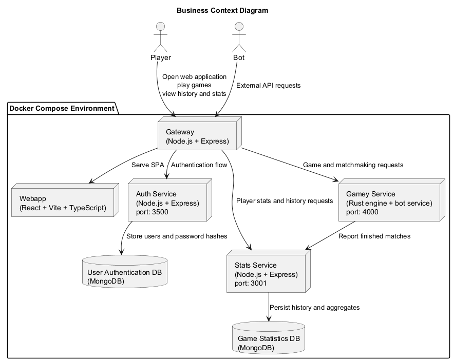
3.2. Business Context Elements
-
Player: main human user of the platform through a browser. -
Bot: automated consumer of the gameplay and stats APIs. -
Gateway: single public entry point of the system. -
Webapp: SPA that renders login, dashboard, gameplay, history and help. -
Auth Service: registration, login, token verification and account persistence. -
Gamey Service: game rules, bot execution, online matchmaking and active session state. -
Stats Service: match history and player statistics persistence/query layer. -
User Authentication DB: MongoDB database used only byauth_service. -
Game Statistics DB: MongoDB database used only bystats.
3.3. Technical Context
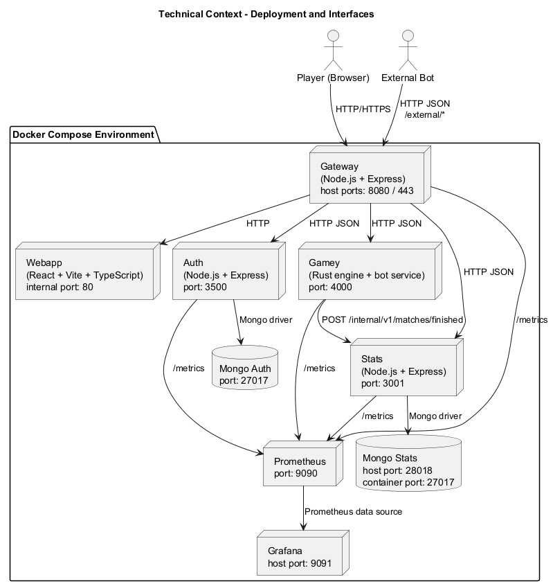
3.4. Technical Interfaces
| Participant | Input / Output | Channel / Protocol |
|---|---|---|
|
Open the SPA, authenticate, create games, play turns and inspect history. |
HTTP/HTTPS through the gateway |
|
Query gameplay and statistics APIs outside the browser flow. |
HTTP JSON through the gateway external API |
|
Public entry point that serves |
HTTP/HTTPS externally, HTTP internally |
|
Render the SPA and call backend APIs through the gateway. |
HTTP inside Docker |
|
Registration, login, JWT verification and user persistence. |
HTTP REST plus MongoDB driver |
|
Game creation, bot execution, matchmaking, online turns and internal reporting to stats. |
HTTP REST |
|
Player aggregates, match history and internal finished-match ingestion. |
HTTP REST plus MongoDB driver |
|
Persistent storage for auth identities and statistics/history. |
MongoDB wire protocol |
|
Scrape |
HTTP |
|
Visualize dashboards over Prometheus data. |
HTTP |
3.4.1. Observability Context
The technical context also includes an embedded observability stack for local execution and demos.
Prometheus is available at http://localhost:9090 and scrapes gateway, auth, stats and gamey every 15s through their /metrics endpoints, as configured in monitoring/prometheus/prometheus.yml.
Grafana is available at http://localhost:9091, uses that Prometheus instance as its default data source and provisions the dashboard Yovi Observability.
This monitoring path matters architecturally because it gives direct visibility into both cross-service HTTP behavior and game-specific runtime data such as matchmaking queue size, active games and finished games still kept in memory by gamey.
4. Solution Strategy
This section summarizes the main solution approaches that shape the architecture of Yovi. It focuses on the decisions that most clearly explain why the system is structured as it is.
4.1. Technology Decisions
-
Web frontend: React, TypeScript, Vite and MUI are used to build a browser-based SPA with fast interaction and typed UI code. -
Gateway: Node.js and Express provide a lightweight public entry point for routing and error normalization. -
Authentication and statistics: Node.js services with MongoDB persistence keep account management and historical data in independent boundaries. -
Gameplay core: Rust and Axum are used ingameyto isolate game rules, bots, matchmaking and online turn supervision. -
Deployment and operation: Docker Compose is the default integration environment, with Prometheus and Grafana available for monitoring.
4.2. Decomposition Strategy
-
The system exposes a single public entry point through the
gateway. -
Responsibilities are separated into focused services:
webapp,auth_service,gameyandstats. -
Live game state and matchmaking remain in memory inside
gamey, which keeps the gameplay path short. -
Persistent business data is split across
mongo-authandmongo-stats. -
Inter-service communication is mainly synchronous HTTP/JSON, with graceful degradation when statistics reporting is temporarily unavailable.
4.3. Quality Goals and Solution Approaches
| Quality goal | Scenario | Solution approach |
|---|---|---|
Robustness |
A game action, invalid move or temporary backend problem must not break the user flow. |
|
Usability |
A player should be able to authenticate, start a match and continue it after a reload with little friction. |
The frontend is a SPA, the public access point is unique, and the browser stores session and resumable game information locally. |
Performance |
Moves and turn changes should feel immediate, especially during online play. |
The critical path is kept short ( |
Compatibility |
The application should be reachable from standard browsers on desktop and mobile devices. |
The user interface is delivered as a web application behind a single HTTP gateway, avoiding client-specific dependencies. |
Security |
Credentials and internal write operations must be protected against unauthorized access. |
|
4.4. Organizational Decisions
-
Source code and documentation are maintained in a single repository.
-
Documentation follows the
arc42template and uses PlantUML diagrams stored as code. -
The team uses Docker Compose as the common integration environment.
-
Quality checks are part of the normal workflow before merging changes.
5. Building Block View
This section explains how Yovi is decomposed into building blocks and why those boundaries exist. The goal is not to mirror the repository file by file, but to make responsibility ownership visible: which block owns the browser experience, which block acts as public edge, which block owns live gameplay, and which blocks persist identity and history.
The view is structured in three levels:
-
Level 1 presents the overall decomposition of the system.
-
Level 2 zooms into the blocks that matter most for understanding the architecture in code.
-
Level 3 refines the most coordination-heavy part of the system: online gameplay inside
Gamey Service.
Some diagram nodes intentionally group closely related implementation pieces to keep the view readable. The tables below each diagram unpack those groups into their concrete responsibilities, interfaces and code locations.
5.1. Whitebox Overall System
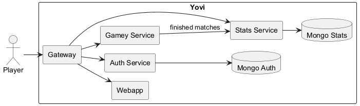
- Motivation
-
The top-level decomposition follows responsibility boundaries rather than technical layers. The browser-facing concerns, public routing, authentication, live game execution and historical persistence evolve for different reasons and at different speeds, so they are documented as separate building blocks.
- Contained Building Blocks
-
Name Responsibility Interfaces Code WebappSingle-page application for login, game configuration, gameplay, match history and help views.
Uses
/auth/,/api/and/stats/*through the gateway.webapp/GatewaySingle external entry point, proxy router and public API facade.
Exposes
/,/auth/,/api/,/stats/,/external/.gateway/gateway-service.jsAuth ServiceRegistration, login, token verification and account persistence.
/register,/login,/verifyauth_service/Gamey ServiceGame rules, bot execution, active sessions, matchmaking and timeout supervision.
/v1/games/,/v1/matchmaking/,/v1/ybot/choose/*gamey/Stats ServicePersistence and query API for match history and player statistics.
/v1/me,/v1/me/history,/internal/v1/matches/finishedstats/Mongo AuthPersistent storage of users and password hashes.
MongoDB connection from
auth_serviceDocker volume
mongo-auth-dataMongo StatsPersistent storage of finished matches and aggregate counters.
MongoDB connection from
statsDocker volume
mongo-stats-data - Important Interfaces
-
-
Player → Gateway: all browser traffic enters through one public HTTP endpoint. -
Gateway → internal services: the gateway resolves ownership of each route prefix and forwards the request to the corresponding service. -
Gamey Service → Stats Service: match completion is reported internally so the browser never writes statistics directly.
-
5.2. Level 2
Level 2 focuses on the blocks with the highest explanatory value for this project: Webapp, Gateway and Gamey Service.
Those three blocks concentrate the decisions that make Yovi distinctive: SPA state management, a single public edge, and an in-memory online gameplay core.
Auth Service and Stats Service remain at black box level because their internal structure is comparatively direct and does not add much architectural insight beyond the interfaces already shown in level 1.
5.2.1. White Box Webapp
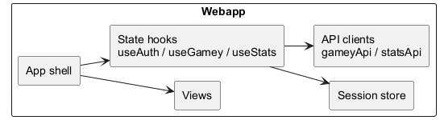
- Motivation
-
The frontend is intentionally small in terms of architectural primitives. The app shell decides which screen to render, views focus on presentation, and hooks own the main interaction flows. This split keeps rendering logic, remote communication and browser persistence understandable without turning the SPA into a monolith of ad hoc state updates.
- Contained Building Blocks
-
Name Responsibility Interfaces Code App shellSelects the active screen and connects hooks with views.
Internal React composition.
webapp/src/App.tsxViewsRender login, dashboard, game, history, help and supporting UI components.
React props from the app shell and hooks.
webapp/src/views/useAuthManages authentication state, guest mode, token verification and logout.
Calls auth endpoints and browser storage directly.
webapp/src/hooks/useAuth.tsuseGameyHandles game creation, matchmaking, online synchronization and in-game actions.
Calls game endpoints and persists resumable game data.
webapp/src/useGamey.tsuseStatsLoads player aggregates and recent match history.
Calls stats endpoints for authenticated users.
webapp/src/useStats.tsGame/Stats API clientsWrap low-level HTTP interaction for gameplay and statistics flows.
fetchcalls to/apiand/stats.webapp/src/gameyApi.ts,webapp/src/statsApi.tsSession storePersists active session and resumable game metadata.
Browser local storage.
webapp/src/gameSessionStore.ts - Important Interfaces
-
-
useAuth → /auth/*: login, registration and token verification. -
useGamey → /api/*: game lifecycle, matchmaking and bot hints. -
useStats → /stats/*: player statistics and match history.
-
5.2.2. White Box Gateway
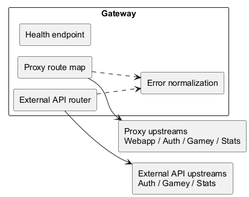
- Motivation
-
The gateway is intentionally thin. Its job is to be the single public edge of the system, not to absorb domain logic. That makes the deployment easier to explain and keeps ownership of authentication, gameplay and statistics inside the services that actually implement those rules.
- Contained Building Blocks
-
Name Responsibility Interfaces Code Proxy route mapMaps public prefixes to internal services.
/,/auth/,/api/,/stats/*gateway/gateway-service.jsExternal API routerExposes public endpoints for external consumers and bot-related documentation.
/external/*gateway/gateway-service.jsError normalizationTransforms upstream connection failures into predictable HTTP
502responses.JSON error response to the browser.
gateway/gateway-service.jsHealth endpointProvides a basic liveness check.
/healthgateway/gateway-service.js - Important Interfaces
-
-
Gateway → Webapp: forwards root traffic to the SPA. -
Gateway → Auth Service,Gamey Service,Stats Service: forwards route-specific API traffic. -
Gateway → browser: returns normalized502 Bad Gatewayresponses when an upstream service is unavailable.
-
5.2.3. White Box Gamey Service
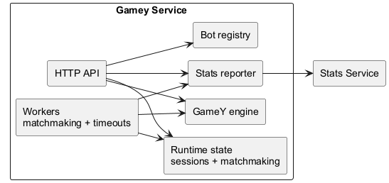
- Motivation
-
Gamey Serviceis the architectural core of Yovi. It owns the state that is most volatile and hardest to coordinate: active matches, online matchmaking, player turn validation and bot-assisted gameplay. Keeping those responsibilities together avoids duplicating game rules across services and keeps the critical gameplay path short. - Contained Building Blocks
-
Name Responsibility Interfaces Code HTTP APIExposes endpoints for games, moves, resign/pass actions, matchmaking and bots.
HTTP/JSON endpoints under
/v1/*gamey/src/bot_server/mod.rsGame session storeKeeps active matches and related metadata in memory.
Shared internal state.
gamey/src/bot_server/state.rsMatchmaking stateStores waiting tickets and matched ticket information in memory.
Shared internal state.
gamey/src/bot_server/state.rsMatchmaking workerPairs waiting players and creates online games with player tokens.
Background worker over shared matchmaking state.
gamey/src/bot_server/matchmaking.rsTimeout monitorAuto-passes turns and finishes inactive online games.
Background worker over active sessions.
gamey/src/bot_server/games.rsGameY engineValidates moves, applies actions and determines winners.
Internal domain API.
gamey/src/core/Bot registryResolves the configured bot and computes automated moves.
Internal bot selection and execution.
gamey/src/bot/Stats reporterSends finished match summaries to the stats service.
HTTP call to
/internal/v1/matches/finishedgamey/src/bot_server/games.rs - Important Interfaces
-
-
x-user-id: propagates the session identity used to associate games and statistics with a player. -
x-opponent-user-id: supports direct human-vs-human game creation without matchmaking. -
x-player-token: proves turn ownership inside matchmaking-created online games.
-
5.3. Level 3
Level 3 opens the Gamey Service block introduced in level 2.
The refinement focuses on its online gameplay runtime because that slice contains the most coordination-heavy behavior in the whole system: request handling, shared in-memory state, background workers and completion reporting.
Bot execution remains at level 2 because it is important, but orthogonal to the online human-vs-human flow documented here.
5.3.1. White Box Gamey Service - Online Gameplay Runtime
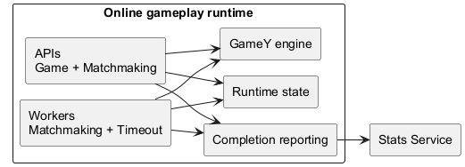
- Motivation
-
This white box explains the static structure behind online play in
Gamey Service. The goal is to make clear which internal parts receive HTTP requests, which parts own runtime state, which parts run in the background and which part bridges the live match state with persistent history inStats Service. - Contained Building Blocks
-
Name Responsibility Interfaces Code Game APIServe game creation, querying and in-game actions for active matches.
HTTP handlers for
/v1/games/*gamey/src/bot_server/games.rsMatchmaking APIServe enqueue, ticket query and cancellation operations for waiting players.
HTTP handlers for
/v1/matchmaking/*gamey/src/bot_server/matchmaking.rsRuntime stateKeep active sessions, active-game ownership and matchmaking data in shared memory.
Internal state shared through
AppState.gamey/src/bot_server/state.rsMatchmaking workerPairs waiting players and creates the online
GameSessionplus player tokens once a compatible opponent is found.Internal background task over matchmaking state.
gamey/src/bot_server/matchmaking.rsTimeout monitorSupervises online activity, applies automatic pass on turn timeout and finishes games when inactivity rules are triggered.
Internal background task over active sessions.
gamey/src/bot_server/games.rsGameY engineValidate moves and actions, evolve the board and determine winners.
Internal domain API.
gamey/src/core/Completion reportingSend finished-match summaries to the statistics service after game completion.
HTTP call to
/internal/v1/matches/finishedgamey/src/bot_server/games.rs - Important Interfaces
-
-
Game API → Runtime state: load sessions, update player presence and persist match progress. -
Matchmaking API → Runtime state: create waiting tickets, expose queue status and publish matched results. -
Matchmaking worker → Runtime state: consume waiting entries and publish matched ticket results together with the created online game. -
Timeout monitor → Runtime state: read and update online session metadata used for inactivity and turn timers. -
Game API / Timeout monitor → GameY engine: apply moves and forced actions using the same rule implementation. -
Game API / Timeout monitor → Completion reporting: bridge finished runtime state with the reporting step that persists the outcome. -
Completion reporting → Stats Service: persist the finished match outcome through the internal stats endpoint.
-
6. Runtime View
This section documents the runtime scenarios that are most useful to understand Yovi: authentication, game creation, multiplayer synchronization, statistics reporting and degraded behavior.
6.1. Scenario Selection
| Scenario | Why it is relevant |
|---|---|
Login and session recovery |
Shows the complete path for authentication and explains how the webapp restores a valid session after reload. |
Create a new game |
Explains how the main business capability starts and where the live game state is stored. |
Matchmaking and online turn supervision |
Captures the polling flow, token-based online play and the background timeout behavior of |
Finish a match and update statistics |
Shows the integration between |
Gateway upstream failure |
Documents the standardized error path exposed to the browser when an internal service is unavailable. |
6.2. Login and Session Recovery
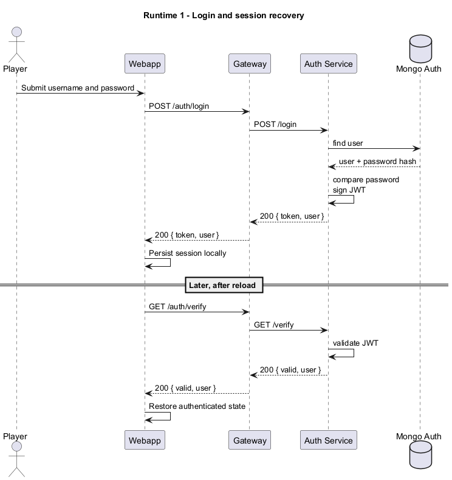
-
The gateway is the only public access point used by the browser.
-
auth_serviceowns credential validation and token issuance. -
The browser keeps only session data; account data remains in
Mongo Auth.
6.3. Create a New Game
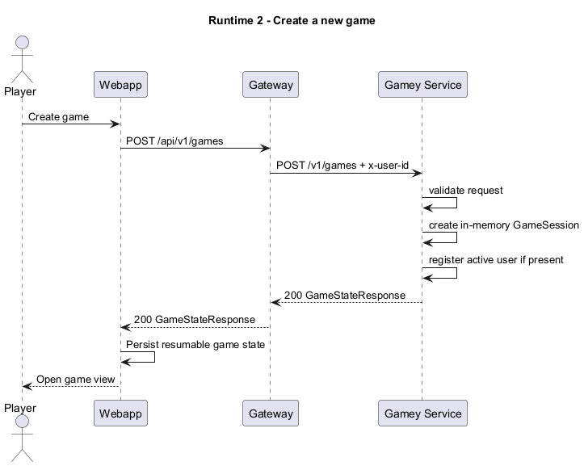
-
Active matches are stored in memory inside
gamey. -
Creating a game does not require a database write.
-
The webapp stores enough local state to resume the match later.
6.4. Matchmaking and Online Turn Supervision
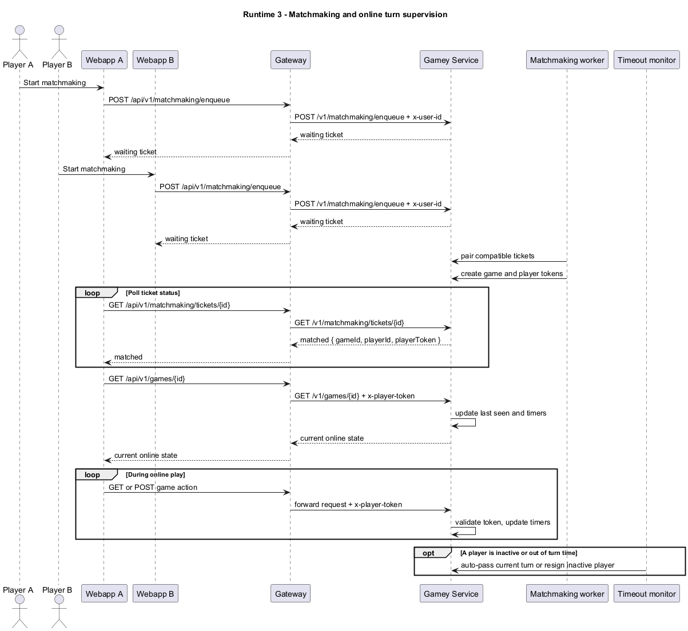
-
Matchmaking tickets and active online games are held in memory in
gamey. -
The browser polls the ticket until it becomes
matched, then opens the created game automatically. -
x-player-tokenbinds actions to the correct online player.
6.5. Finish a Match and Update Statistics
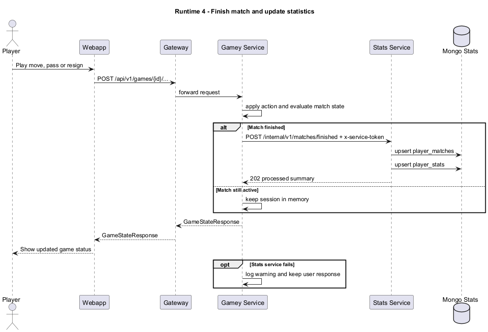
-
Statistics are updated only when a match reaches a finished state.
-
The reporting call is internal and protected with a service token.
-
A stats failure does not block the player from receiving the final game state.
6.6. Gateway Upstream Failure
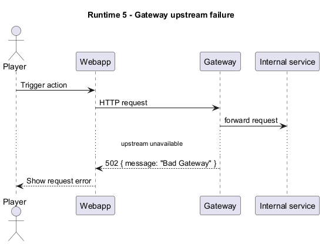
-
The gateway converts connection problems into a predictable HTTP
502response. -
The browser does not need to know which internal service failed.
7. Deployment View
7.1. Infrastructure Level 1
The system is deployed using Docker containers orchestrated via Docker Compose, suitable for development and demonstration environments. The infrastructure consists of multiple microservices running in isolated containers, communicating over a Docker internal network.
The deployment supports a local environment where all services run on a single host machine.
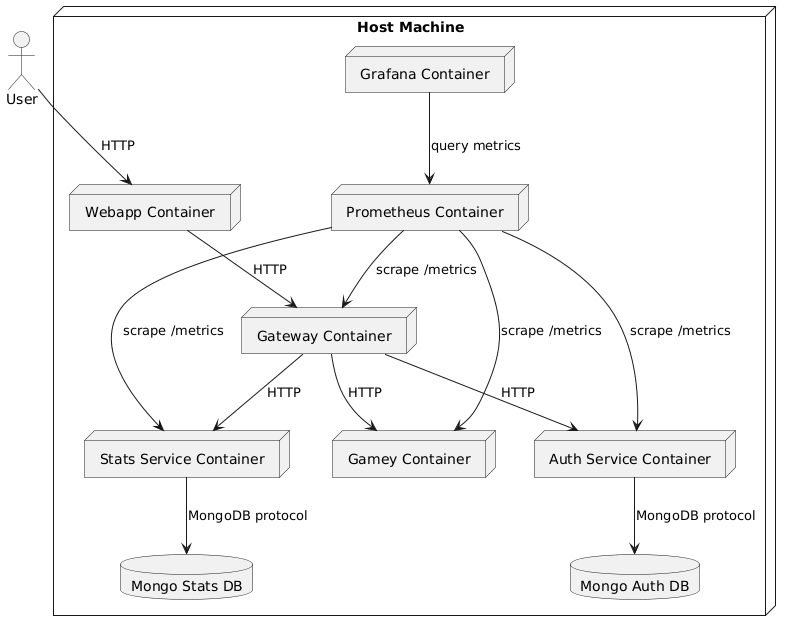
- Motivation
-
The containerized deployment ensures:
-
Isolation of services to prevent dependency conflicts.
-
Easy scalability and portability across environments.
-
Simplified development setup with Docker Compose.
-
Observability through integrated monitoring tools.
-
A database component has been introduced to persist user data, enabling real user registration and long-term storage.
-
- Quality and/or Performance Features
-
-
Scalability: Each service can be scaled independently by adjusting container instances.
-
Reliability: Containerization provides consistent runtime environments.
-
Security: Services communicate over an internal network, with the gateway as the single entry point.
-
Observability: Prometheus collects metrics, and Grafana provides dashboards for monitoring.
-
Performance: Lightweight containers minimize resource overhead in development.
-
Persistence: User data is stored in a dedicated database component.
-
- Mapping of Building Blocks to Infrastructure
-
| Building Block | Infrastructure Element | |-------------------------|---------------------------------| | Webapp (React SPA) | Webapp Container | | Gateway Service | Gateway Container | | Auth Service | Auth Service Container | | Gamey (Rust Game Engine)| Gamey Container | | Stats Service | Stats Service Container | | User Data Persistence | Mongo Auth DB Container | | Stats Data Persistence | Mongo Stats DB Container | | Metrics Collection | Prometheus Container | | Dashboard Visualization | Grafana Container |
7.2. Monitoring and Observability
The Docker Compose deployment includes a built-in observability stack that is available during development, load testing and classroom demos.
| Tool | Purpose | Default URL | Configuration |
|---|---|---|---|
|
Collects time-series metrics by scraping the services' |
|
|
|
Displays dashboards over the Prometheus data source. |
|
Prometheus scrapes the internal Docker targets gateway:8080, auth:3500, stats:3001 and gamey:4000 every 15s.
Grafana is provisioned with the Prometheus data source and the dashboard Yovi Observability, so the monitoring UI is ready as soon as the stack starts.
The deployment also provides an optional Gatling runner through docker-compose.load-tests.yml.
It mounts the repository’s load-tests/ directory into a Maven container and runs YoviSimulation against the internal gateway:8080 endpoint by default.
This keeps the load tests close to the project code while avoiding an always-on load generator in the normal application stack.
The dashboard concentrates on the signals that are most useful for this project:
-
request rate and average latency per service
-
5xxerror rate and scrape health -
resident memory of the Node.js services
-
game-specific metrics such as active games, finished games still in memory, matchmaking queue size and recent gameplay activity
The most relevant exported metrics are:
-
yovi_http_requests_total,yovi_http_request_duration_seconds_sum,yovi_http_request_duration_seconds_countandyovi_process_uptime_secondsfor generic HTTP traffic and latency -
yovi_process_resident_memory_bytesandyovi_process_heap_used_bytesfor Node.js process memory -
yovi_gamey_ongoing_games,yovi_gamey_finished_games_in_memory,yovi_gamey_matchmaking_queue_size,yovi_gamey_matchmaking_tickets,yovi_gamey_games_created_total,yovi_gamey_moves_played_total,yovi_gamey_resignations_totalandyovi_gamey_turn_passes_totalfor the live state ofgamey
7.3. Infrastructure Level 2
7.3.1. Webapp Container
The Webapp container serves the production React build as static files through Nginx. Node.js is only used during the image build stage to compile the frontend assets.
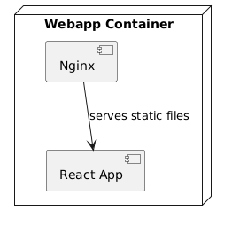
-
Nginx: Handles static file serving and SPA fallback routing.
-
React App: Client-side application for user interaction.
7.3.2. Auth Service Container
The Auth Service container runs a Node.js application with MongoDB for persistence.
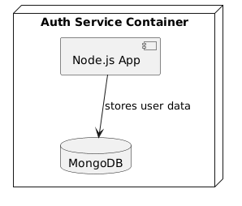
-
Node.js App: Implements authentication logic and REST API.
-
MongoDB: Persists user credentials and profiles.
7.3.3. Gamey Container
The Gamey container runs a Rust application for game logic.
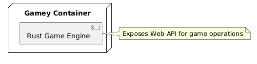
-
Rust Game Engine: Core game logic, matchmaking, and bot players.
7.3.4. Mongo Auth Container
The Mongo Auth container:
-
Stores user authentication data persistently.
-
Is accessed exclusively by the Auth Service.
-
Is not directly exposed to the frontend or Gamey.
-
Ensures data durability and separation of concerns.
Mongo Stats is a separate database container used by the stats service.
7.3.5. Monitoring Stack
Prometheus and Grafana run in separate containers for observability.
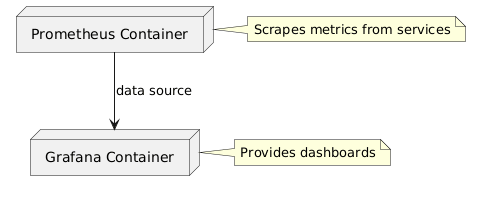
-
Prometheus: Time-series database for metrics.
-
Grafana: Visualization tool for dashboards.
8. Cross-cutting Concepts
8.1. Domain Concepts
The core domain of the Yovi system revolves around multiplayer board games, user authentication, and statistics tracking.
Key domain entities include users, games, players (human or bot), moves, and statistics.
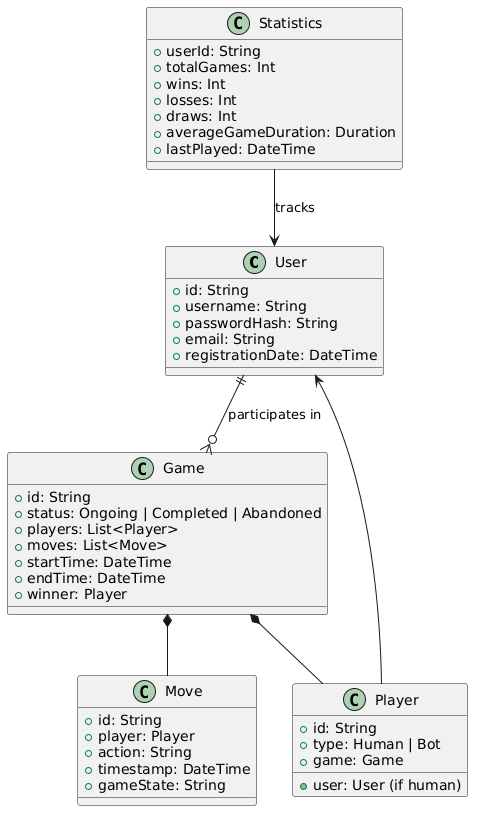
8.2. User Experience Concepts
The user experience focuses on simplicity, responsiveness, and accessibility for game enthusiasts.
-
Single Page Application: Seamless navigation without page reloads.
-
Real-time Updates: Immediate feedback on game actions and matchmaking.
-
Responsive UI: Adapts to mobile and desktop devices.
-
Intuitive Navigation: Clear menus for registration, login, game creation, and stats viewing.
-
Error Handling: User-friendly messages for invalid actions or network issues.
8.3. Security Concepts
Security is paramount to protect user data and ensure fair gameplay.
-
Authentication: JWT tokens for session management.
-
Password Security: Hashing with scrypt.
-
Data Isolation: Separate databases for auth and stats.
-
Internal Write Protection: Stats writes are accepted only through the internal service-token endpoint.
-
Gameplay Authorization: Matchmaking games use per-player tokens to validate online actions.
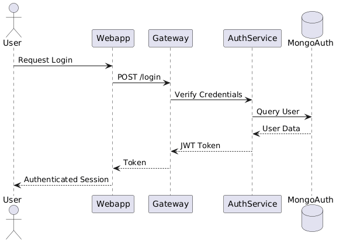
8.4. Architecture and Design Patterns
The architecture employs microservices with clear patterns for scalability and maintainability.
-
Microservices Pattern: Independent services for auth, game logic, stats, and gateway.
-
API Gateway: Centralized routing and error normalization at the public edge.
-
Separated Persistence: Authentication and statistics use independent MongoDB databases.
-
Pull-based Observability: Prometheus scrapes metrics exposed by the runtime services.
-
State Boundary: Gateway, auth and stats keep little runtime state, while active matches and matchmaking live in memory inside
gamey.
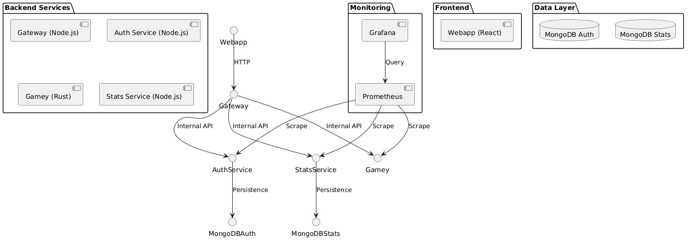
8.5. Development Concepts
Development emphasizes modularity, testing, and continuous integration.
-
Independent Builds: Each service builds separately.
-
Automated Testing: Unit and integration tests.
-
Version Control: Git with feature branches.
-
Containerization: Docker for consistent environments.
-
Code Quality: Linting and code reviews.
8.6. Operational Concepts
Operations prioritize ease of deployment and monitoring in development/demo settings.
-
Container Orchestration: Docker Compose for local deployment.
-
Logging: Stdout logging for containerized services.
-
Monitoring: Prometheus and Grafana for metrics and dashboards.
-
Backup: MongoDB dumps for data persistence.
-
Scaling: Horizontal scaling via additional containers.
9. Architecture Decisions
This section has been deleted from the documentation due to its integration in the wiki. The content can be found here: [Architecture Decisions](https://github.com/Arquisoft/yovi_es4b/wiki/Registro-de-decisiones-arquitect%C3%B3nicas)
10. Quality Requirements
10.1. Quality Tree
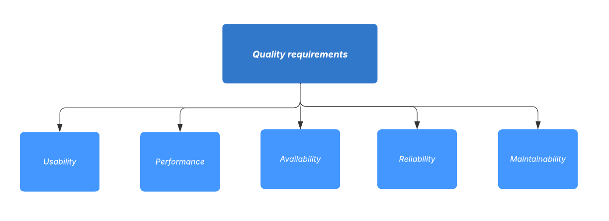
10.2. Quality Scenarios
| Priority | Quality Requirement | Scenario | System Response |
|---|---|---|---|
1 |
Usability |
A user opens the game and wants to play. |
The interface should be intuitive, the rules clear and the user should be able to understand how to play. |
2 |
Performance |
Multiple players plays simultaneously. |
The game updates all moves and displays changes within 1 second. |
3 |
Reliability |
A network hiccup occurs during a match. |
The game state is preserved, players can continue without losing progress. |
4 |
Maintainability |
Developers add a new feature. |
The new feature integrates smoothly without affecting existing gameplay. |
5 |
Availability |
The system needs to handle more concurrent users. |
The game continues to run with a minimal decrease in latency. |
10.3. Load Testing Evidence
We complemented the qualitative scenarios above with an executable load test based on Gatling 4.21.5.
The executed simulation was YoviSimulation, and the exercised scenario was register-login-play-resign-stats.
The executable assets are versioned in load-tests/: the simulation is in load-tests/test/YoviSimulation.java, and the captured console output is stored in load-tests/results/resultados.txt.
The simulation is parameterized through yovi.baseUrl, yovi.usersPerSec and yovi.durationSeconds, so the same test can be run against a local stack, the Docker Compose network or a deployed server.
The most relevant part of the final Gatling console output is reproduced below, preserving the endpoint names and summary emitted by the tool:
========================================================================================================================
2026-04-20 20:59:30 GMT 64s elapsed
---- Requests -----------------------------------------------------------------------|---Total---|-----OK----|----KO----
> Global | 720 | 720 | 0
> register | 120 | 120 | 0
> login | 120 | 120 | 0
> create_game | 120 | 120 | 0
> resign_game | 120 | 120 | 0
> stats_me | 120 | 120 | 0
> stats_history | 120 | 120 | 0
---- register-login-play-resign-stats ----------------------------------------------------------------------------------
[###############################################################################################################] 100%
waiting: 0 / active: 0 / done: 120
========================================================================================================================
---- Global Information -------------------------------------------------------------|---Total---|-----OK----|----KO----
> request count | 720 | 720 | -
> min response time (ms) | 90 | 90 | -
> max response time (ms) | 224 | 224 | -
> mean response time (ms) | 125 | 125 | -
> response time std deviation (ms) | 40 | 40 | -
> response time 50th percentile (ms) | 98 | 98 | -
> response time 75th percentile (ms) | 177 | 177 | -
> response time 95th percentile (ms) | 184 | 184 | -
> response time 99th percentile (ms) | 198 | 198 | -
> mean throughput (rps) | 11.08 | 11.08 | -
---- Response Time Distribution ----------------------------------------------------------------------------------------
> OK: t < 800 ms 720 (100%)
> OK: 800 ms <= t < 1200 ms 0 (0%)
> OK: t >= 1200 ms 0 (0%)
> KO 0 (0%)
========================================================================================================================- Interpretation
-
For the tested end-to-end flow, all
720requests finished successfully, the mean response time remained at125 ms, and the complete run stayed below the project target of one second per request. The per-endpoint counts also show that the whole functional path was exercised uniformly:120executions each forregister,login,create_game,resign_game,stats_meandstats_history. - Limitations
-
This measurement is not a production benchmark. It was captured in a local deployment and focuses on a representative business flow, not on extreme concurrency, prolonged execution or large-scale online matchmaking saturation.
11. Risks and Technical Debts
Identifying and recording technical risks and debts at an early stage is essential for the project’s success. By identifying potential issues ahead of time, the team can take appropriate measures to minimize their impact. Prioritizing these risks ensures that the most critical ones are addressed first, allowing for better planning and a more stable and maintainable architecture.
11.1. Technical Risks
This table lists the main technical risks for our online board game project, including both team-related and system-related risks, ordered by priority.
| Priority | Risk | Description | Mitigation |
|---|---|---|---|
High |
Team members abandoning the project |
One or more team members leave the project in the middle of development, increasing workload for remaining members. |
Ensure code is well documented and modular, redistribute tasks, and maintain clear progress tracking. |
High |
Poor or limited communication within the team |
Misunderstandings and delays occur due to a lack of communication between team members. |
Hold regular meetings with clear minutes; use task boards and messaging tools to achieve constant communication. |
High |
Limited experience with large-scale projects |
The team has little prior experience working on projects from scratch or with multiple contributors. |
Conduct research, review best practices, and define clear development workflows and responsibilities. |
Medium |
Limited experience with Rust |
The project uses Rust, which is new to the team members, potentially causing delays or inefficient code. |
Each team member should independently study Rust and experiment with small prototypes to build competence. |
Medium |
Lack of experience with Docker |
Docker is used for deployment and development environments, but the team is not familiar with it. |
Set up step-by-step guides and practice building containers. |
Medium |
Database performance or schema issues |
As users increase, the database may slow down or be difficult to scale due to initial design choices. |
Optimize queries, define indexes, and design the schema for future scalability. |
Medium |
Inter-service communication failures |
Game, authentication or statistics flows may be partially unavailable if one internal service is down or slow. |
Keep gateway errors predictable, degrade gracefully when stats reporting fails, and monitor services with Prometheus/Grafana. |
Low |
High concurrent usage |
Many players using the system simultaneously may degrade performance or affect game state consistency. |
Conduct load testing, use caching, and optimize backend services. |
12. Glossary
| Term | Definition |
|---|---|
JavaScript |
A dynamic, high-level programming language frequently utilized for client-side and interactive web development |
Front-end |
The part of a web application that interacts with the user, usually involving the user interface and client-side logic. |
Back-end |
The part of a web application that runs on the server, handling data storage, business logic, and interaction with the front-end. |
Rust |
A modern programming language focused on safety, performance, and concurrency. |
Node.js |
A JavaScript runtime built on Chrome’s V8 engine that allows executing JavaScript on the server-side. |
Docker |
An open-source platform that automates the deployment, scaling, and management of applications using containerization. |
Framework |
A reusable set of libraries or tools that provides a structured environment to develop software applications efficiently. |
API |
API refers to Application Programming Interface. It is a set of rules and protocols that allows software applications to communicate with each other. |
React |
A JavaScript library for building interactive user interfaces, particularly single-page applications. |